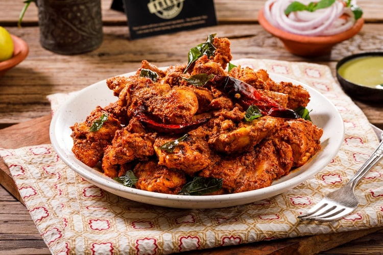

All Recipes
ALL POTALOES AND TOMATO DESH
ounded in 2000, Doctors Hospital is an internationally renowned 250-bed hospital located in Lahore, Pakistan. For more than 18 years we have been fulfilling the medical needs of our community. scope of services and skills available within the country.Make it!
ALL POTALOES AND TOMATO DESH
ounded in 2000, Doctors Hospital is an internationally renowned 250-bed hospital located in Lahore, Pakistan. For more than 18 years we have been fulfilling the medical needs of our community. scope of services and skills available within the country.Make it!
ALL POTALOES AND TOMATO DESH
ounded in 2000, Doctors Hospital is an internationally renowned 250-bed hospital located in Lahore, Pakistan. For more than 18 years we have been fulfilling the medical needs of our community. scope of services and skills available within theounded in 2000, Doctors Hospital is an internationally renowned 250-bed hospital located in Lahore, Pakistan. For more than 18 years we have been fulfilling the medical needs of our community. scope of services and skills available within the country.
Make it!
